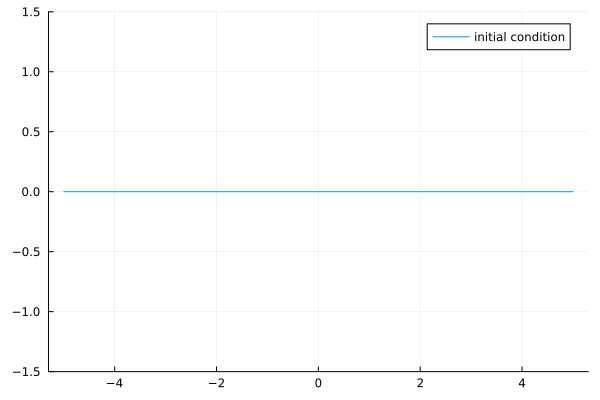
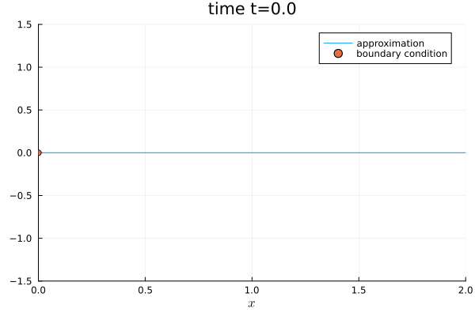

7: Non-periodic boundaries


Dirichlet boundary condition
First, let's look at the Dirichlet boundary condition BoundaryConditionDirichlet.
BoundaryConditionDirichlet(boundary_value_function)In Trixi.jl, this creates a Dirichlet boundary condition where the function boundary_value_function is used to set the values at the boundary. It can be used to create a boundary condition that sets exact boundary values by passing the exact solution of the equation.
It is important to note that standard Dirichlet boundary conditions for hyperbolic PDEs do not make sense in most cases. However, we are using a special weak form of the Dirichlet boundary condition, based on the application of the numerical surface flux. The numerical surface flux takes the solution value from inside the domain and the prescribed value of the outer boundary state as arguments, and solves an approximate Riemann problem to introduce dissipation (and hence stabilization) at the boundary. Hence, the performance of the Dirichlet BC depends on the fidelity of the numerical surface flux. An easy-to read introductory reference on this topic is the paper by Mengaldo et al..
The passed boundary value function is called with the same arguments as an initial condition function, i.e.
boundary_value_function(x, t, equations)where x specifies the spatial coordinates, t is the current time, and equations is the corresponding system of equations.
We want to give a short example for a simulation with such a Dirichlet BC.
Consider the one-dimensional linear advection equation with domain $\Omega=[0, 2]$ and a constant zero initial condition.
using OrdinaryDiffEqLowStorageRKusing Trixiadvection_velocity = 1.0equations = LinearScalarAdvectionEquation1D(advection_velocity)initial_condition_zero(x, t, equation::LinearScalarAdvectionEquation1D) = SVector(0.0)initial_condition = initial_condition_zerousing Plotsplot(x -> sum(initial_condition(x, 0.0, equations)), label = "initial condition", ylim = (-1.5, 1.5))
Using an advection velocity of 1.0 and the (local) Lax-Friedrichs/Rusanov flux FluxLaxFriedrichs as a numerical surface flux, we are able to create an inflow boundary on the left and an outflow boundary on the right, as the Lax-Friedrichs flux is in this case an exact characteristics Riemann solver. We note that for more complex PDEs different strategies for inflow/outflow boundaries are necessary. To define the inflow values, we initialize a boundary_value_function.
function boundary_condition_sine_sector(x, t, equation::LinearScalarAdvectionEquation1D) if 1 <= t <= 3 scalar = sinpi(2 * sum(t - 1)) else scalar = zero(t) end return SVector(scalar)endboundary_condition = boundary_condition_sine_sectorboundary_condition_sine_sector (generic function with 1 method)We set the BC in negative and positive x-direction.
boundary_conditions = (x_neg = BoundaryConditionDirichlet(boundary_condition), x_pos = BoundaryConditionDirichlet(boundary_condition))(x_neg = BoundaryConditionDirichlet{typeof(Main.boundary_condition_sine_sector)}(Main.boundary_condition_sine_sector), x_pos = BoundaryConditionDirichlet{typeof(Main.boundary_condition_sine_sector)}(Main.boundary_condition_sine_sector))solver = DGSEM(polydeg = 3, surface_flux = flux_lax_friedrichs)coordinates_min = (0.0,)coordinates_max = (2.0,)(2.0,)For the mesh type TreeMesh the parameter periodicity must be set to false in the corresponding direction.
mesh = TreeMesh(coordinates_min, coordinates_max, initial_refinement_level = 4, periodicity = false)semi = SemidiscretizationHyperbolic(mesh, equations, initial_condition, solver, boundary_conditions = boundary_conditions)tspan = (0.0, 6.0)ode = semidiscretize(semi, tspan)analysis_callback = AnalysisCallback(semi, interval = 100)stepsize_callback = StepsizeCallback(cfl = 0.9)callbacks = CallbackSet(analysis_callback, stepsize_callback);We define some equidistant nodes for the visualization
visnodes = range(tspan[1], tspan[2], length = 300)0.0:0.020066889632107024:6.0and run the simulation.
sol = solve(ode, CarpenterKennedy2N54(williamson_condition = false); dt = 1, # solve needs some value here but it will be overwritten by the stepsize_callback ode_default_options()..., saveat = visnodes, callback = callbacks);using Plots@gif for step in eachindex(sol.u) plot(sol.u[step], semi, ylim = (-1.5, 1.5), legend = true, label = "approximation", title = "time t=$(round(sol.t[step], digits=5))") scatter!([0.0], [sum(boundary_condition(SVector(0.0), sol.t[step], equations))], label = "boundary condition")end
Other available example elixirs with non-trivial BC
Moreover, there are other boundary conditions in Trixi.jl. For instance, you can use the slip wall boundary condition boundary_condition_slip_wall.
Trixi.jl provides some interesting examples with different combinations of boundary conditions, e.g. using boundary_condition_slip_wall and other self-defined boundary conditions using BoundaryConditionDirichlet.
For instance, there is a 2D compressible Euler setup for a Mach 3 wind tunnel flow with a forward facing step in the elixir elixir_euler_forward_step_amr.jl discretized with a P4estMesh using adaptive mesh refinement (AMR).
Source: Video on Trixi.jl's YouTube channel Trixi Framework
A double Mach reflection problem for the 2D compressible Euler equations elixir_euler_double_mach_amr.jl exercises a special boundary conditions along the bottom of the domain that is a mixture of Dirichlet and slip wall.
Source: Video on Trixi.jl's YouTube channel Trixi Framework
A channel flow around a cylinder at Mach 3 elixir_euler_supersonic_cylinder.jl contains supersonic Mach 3 inflow at the left portion of the domain and supersonic outflow at the right portion of the domain. The top and bottom of the channel as well as the cylinder are treated as Euler slip wall boundaries.
Source: Video on Trixi.jl's YouTube channel Trixi Framework
Furthermore, Trixi.jl also handles equations that include non-conservative terms. For such equations, the tuple of conservative and non-conservative surfaces fluxes is passed to the boundary condition, which then returns a tuple containing the boundary condition values for both the conservative and non-conservative terms. For instance, a 2D ideal compressible GLM-MHD setup with reflective walls can be found in the elixir 'elixirmhdreflective_wall.jl.
Package versions
These results were obtained using the following versions.
using InteractiveUtilsversioninfo()using PkgPkg.status(["Trixi", "OrdinaryDiffEqLowStorageRK", "Plots"], mode = PKGMODE_MANIFEST)Julia Version 1.10.12
Commit d93beab124c (2026-08-15 10:29 UTC)
Build Info:
Official https://julialang.org/ release
Platform Info:
OS: Linux (x86_64-linux-gnu)
CPU: 4 × AMD EPYC 7763 64-Core Processor
WORD_SIZE: 64
LIBM: libopenlibm
LLVM: libLLVM-15.0.7 (ORCJIT, znver3)
Threads: 1 default, 0 interactive, 1 GC (on 4 virtual cores)
Environment:
JULIA_PKG_SERVER_REGISTRY_PREFERENCE = eager
Status `~/work/Trixi.jl/Trixi.jl/docs/Manifest.toml`
[b0944070] OrdinaryDiffEqLowStorageRK v3.4.0
[91a5bcdd] Plots v1.41.7
[a7f1ee26] Trixi v0.17.6-DEV `~/work/Trixi.jl/Trixi.jl`This page was generated using Literate.jl.